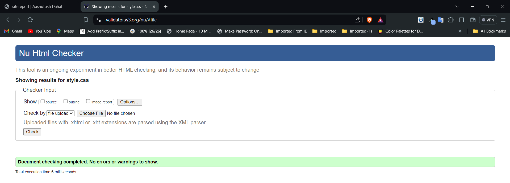
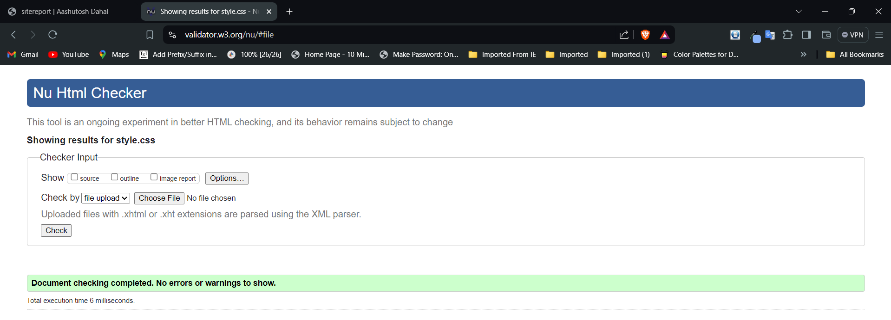

Web Development Experience Report
I must admit that my transition into web development process has been an interesting one filled with a few drawbacks. I knew a little HTML, CSS and JavaScript while at the start of this term and in creating this website I am fully functional with wonderful design. In this article, out of all the elements in the design and technical decision, as well as the debugging and validation stage, I will describe the experience observed.
Learning the Basics
At the beginning of the work I was focused on the core fundamentals of HTML and CSS. When it came to writing semantic HTML and setting basic layout using CSS the process was easy, but as the project went on to planning and implementing the basic structure there were advanced issues such as, or including, responsive design encountered.
Design Decisions
To elaborate, regarding the design of my website, the design elements chosen reflect modern minimalist design elements. Picking the background color as “#fff6e0” for the body and adding green hues is an excellent option as it forms a nice contrast and the users will not have any difficulties in readability while evoking positive psychological responses. Choosing the right color combination can overall improve looks, usability, and brand keywords’ recognition. For the typeface, which I decided to take from Google Fonts, I chose "Poppins", sans-serif because of its relatively high readability and its modern style. By using Font Awesome icon for my navbar allows me to easily incorporate high-quality, scalable icons that enhance the visual appeal and functionality of the site navigation. The ease of integration, extensive icon library, and customizability make Font Awesome an excellent choice for professional web design.
Development Process
During the initial phase of site development, I created five different CSS files. At the end of the project, I merged them all into a single file named `style.css`. In one of the development phases, I managed to encounter the following difficulties; issues with cross-browser practice and the complete responsiveness of the site. CSS debugging sometimes took a long time to resolve due to the complex nature of cascading. Chrome DevTools were useful when debugging CSS. Also, I used various validators to check HTML and CSS codes and confirm if they were accurately written.
Validation Reports
 

Reflective Discussion
Summing it up, I can say that being a web developer was informative, and I developed as a professional. The initial difficulties with some essential questions were useful, as it helped I build up strong ground and carry out sophisticated tasks without much hesitation. The practical component was a major advantage and now I am confident that I can proceed and enhance my knowledge. One of them included the development of the user interface (UI). Equally important was the attempt to combine beauty with practicality, and the latter here was achieved through intense cooperation with users. The procedure that was followed was of developing a prototype, implementing it, and reviewing the results while making necessary changes was a tedious process but was worth the effort.
Video Demonstration
You can watch a video demonstration of my website here.